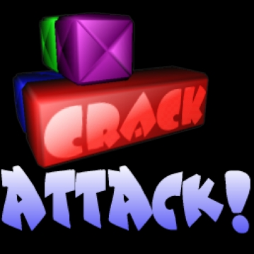

|  |
Windows Installation
version 1.1.8 |
CAInstaller.exe.
MSVBVM60.DLL, you will have to download it:
MSVBVM60.ZIP. UnZip the file into your system folder. This
folder could have any number of names, depending upon the version of Windows
you're using. The name will be something along the lines of
WinNT\System or Win98\System32. Once
MSVBVM60.DLL is in the correct folder, Crack Attack! will run
fine.
~) acts as an escape
character, with the following escape sequences available.
~>~<
~0 |
~1 |
~2 |
~3 |
~4 |
~5 |
~6 |
~7 |
~8 |
~9
~~ |